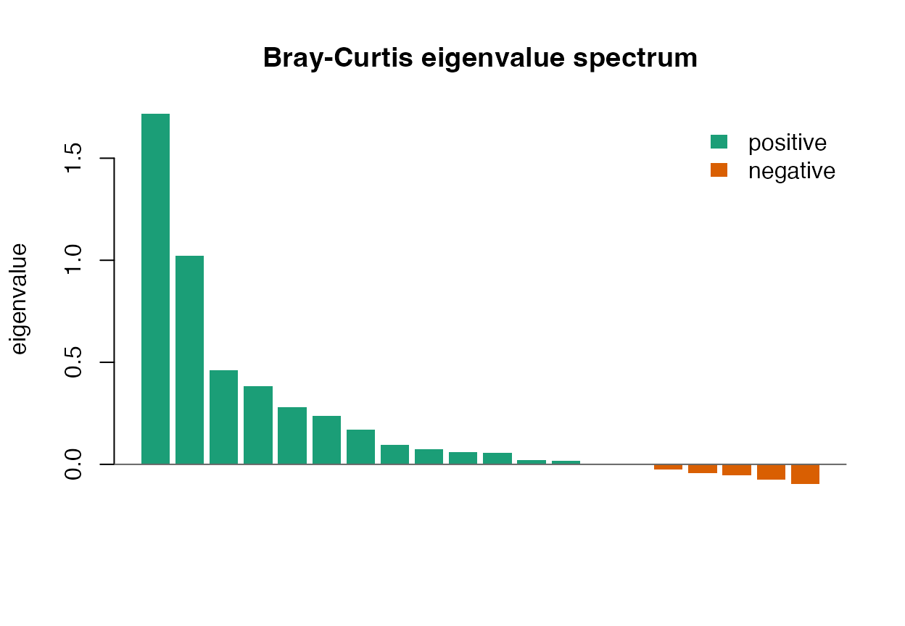

6. Atypical distance matrices
Source:vignettes/6-atypical-distance-matrices.Rmd
6-atypical-distance-matrices.RmdMany ecological dissimilarities are semimetric: they do not
embed in Euclidean space, so the Gower-centred matrix has negative
eigenvalues. distmer works with the Gower-centred matrix
directly and retains the entire eigenvalue spectrum –
negative eigenvalues are reported, never silently discarded. The
geometry can be inspected and corrections can be treated as an explicit
sensitivity analyses (rather than invisible cleanup).
Inspecting the spectrum
distance_diagnostics() summarises whether a
dissimilarity is Euclidean and how much inertia sits on the negative
axes.
bray <- vegdist(dune, method = "bray")
diag_bray <- distance_diagnostics(bray)
unlist(diag_bray[c("euclidean", "positive_inertia", "negative_inertia",
"negative_count", "negative_ratio")])
#> euclidean positive_inertia negative_inertia negative_count
#> 0.00000000 4.59394690 0.29492503 5.00000000
#> negative_ratio
#> 0.06419861
eig <- diag_bray$eigenvalues
barplot(
eig, border = NA, names.arg = NULL,
col = ifelse(eig >= 0, "#1b9e77", "#d95f02"),
main = "Bray-Curtis eigenvalue spectrum", ylab = "eigenvalue"
)
abline(h = 0, col = "grey40")
legend("topright", c("positive", "negative"),
fill = c("#1b9e77", "#d95f02"), border = NA, bty = "n")
A non-zero negative fraction is not an error: distmer
uses the complete pseudo-Euclidean representation for its sums of
squares and permutation tests, so the reported pseudo-F and p-value are
valid for the dissimilarity you chose.
Corrections are separate analyses
A transformation or eigenvalue correction changes the dissimilarity, and therefore the hypothesis. Report it alongside the original with the same seed, never as a silent replacement. A square-root transform, for example, often makes Bray-Curtis closer to Euclidean:
sqrt_bray <- sqrt(bray)
raw <- permanova(bray ~ Management, dune.env, permutations = 199, seed = 1)
sqrt_fit <- permanova(sqrt_bray ~ Management, dune.env, permutations = 199, seed = 1)
rbind(
`Bray-Curtis` = raw$table[1, c("Pseudo-F", "P(perm)")],
`sqrt Bray-Curtis` = sqrt_fit$table[1, c("Pseudo-F", "P(perm)")]
)
#> Pseudo-F P(perm)
#> Bray-Curtis 2.767243 0.005
#> sqrt Bray-Curtis 1.979245 0.005
distance_diagnostics(sqrt_bray)[c("euclidean", "negative_ratio")]
#> $euclidean
#> [1] TRUE
#>
#> $negative_ratio
#> [1] 0Lingoes and Cailliez corrections deserve the same treatment: they add a constant to the dissimilarities to remove negative eigenvalues, so present them as an explicit alternative analysis, not a default.
When the geometry matters
The negative fraction is worth reporting because it bounds how much
of the structure lives outside ordinary Euclidean intuition. A small
negative fraction (as above) means a Euclidean approximation would
change little; a large one means ordination plots and any
Euclidean-embedding step should be read cautiously. Pair this diagnostic
with the dispersion check in vignette("dispersion") before
interpreting a location test.